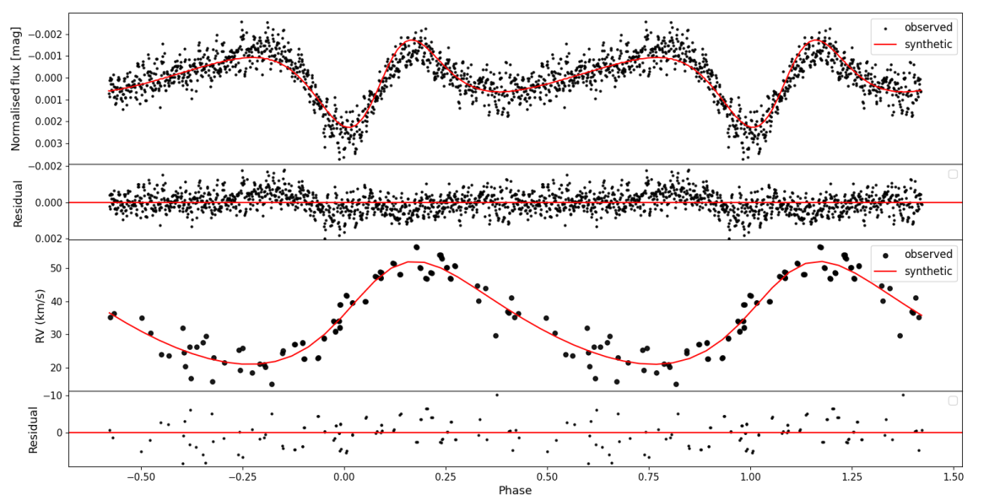
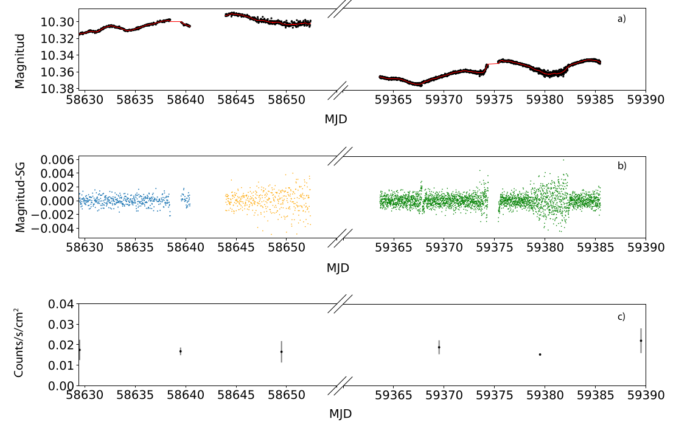
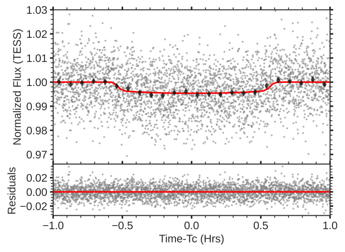

Welcome TESS followers to our latest news bulletin! This week, we are looking at three recent papers from the archive. Enjoy!
Photometric variability of blue straggler stars in M67 with TESS and K2 (Vernekar et al. 2023) :
Blue straggler stars (BSS) are dwarfs that are bluer and brighter than the host cluster’s main-sequence turn-off point. Their origin is typically associated with binary mergers or mass transfer, and as such are prime targets for studying formation and evolution of stellar multiples. Vernekar et al. (2023) present a detailed search for close companions to five BSS -- WOCS 1007, 4006, 4003, 5005, and 1025. The targets are confirmed spectroscopic binaries with orbital periods between 0.4 and ~4,900 days and reside in the rich, old, dynamically-active open cluster M67. The authors combine data from NASA's TESS and K2 missions with the PHOEBE package to analyze and model the photometric variability of the targets and constrain their orbital and physical parameters. TESS observed M67 in Sectors 44, 45, and 46, and two of the targets (WOCS 1007 and 4006) were observed in short-cadence; both targets are also identified as delta Scuti pulsators. For WOCS 1007, Vernekar et al. (2023) measure an orbital period of 4.2 days with eccentricity of 0.2 and identify the primary as a B9V star and the secondary as a low-mass white dwarf. They measure stellar masses of 1.95 MSun and 0.22 MSun, radii of 2.54 RSun and R = 0.078 RSun, and effective temperatures of 7,600 K and 14,300 K for the primary and secondary components, respectively. The authors detect clear delta Scuti pulsations and ellipsoidal variability (i.e., tidal distortion of the star from its close companion) in WOCS 1007 and note that a prominent 5.5/day peak in the frequency spectrum of the TESS lightcurve is due to contamination from a field source separated by 53 arcsec. Utilizing TESS data, Vernekar et al. (2023) were able to provide additional evidence supporting the mass-transfer pathway for the formation of the WOCS 1007 system which results in the formation of a close binary containing a low-mass white dwarf companion.
K2 & TESS observations of symbiotic X-ray binaries: GX 1+4 and IGR J16194-2810 (Luna 2023) :
Symbiotic systems are binary stars composed of a compact object accreting from a red giant. When the compact object is a neutron star, the systems are known as symbiotic X-ray binaries, of which about a dozen are known at the time of writing. Luna (2023) presents a detailed analysis of two such systems, GX1+4 and IGR J16194-2810, the latter of which was observed by TESS in Sectors 12 and 39. Based on optical and X-ray spectroscopy, the giant component of IGR J16194-2810 was identified as a spectral type M2 III red giant. Previous observations found no evidence for pulsations of the neutron star (potentially due to unfavorable geometric configuration) and, prior to TESS, its spin period was unknown. To address this issue, Luna (2023) divides the TESS lightcurve of the target into three segments and searches for significant periodicity in each of them with a Generalized Lomb-Scargle algorithm. The author detects a prominent peak at 242.839 minutes as well as the corresponding first harmonic in the power spectrum of the first two data segments (Sector 12, MJD < 58640.43 and 58643.97 < MJD < 58652.37), which they associate with the spin period of the neutron star component of IGR J16194-2810. Luna (2023) argues that the measured periodicity and the X-ray luminosity of the target (1034-35 erg/sec) are consistent with model predictions. With that said, the author notes that the 242.839 minutes periodicity is likely transient, since the peak is not present in the power spectrum for Sector 39 (MJD > 59363.64), despite the fact that neither the optical nor the X-ray luminosity of the targets seem to have changed significantly between the two epochs (May 2019 vs May 2021). Thanks to TESS, IGR J16194-2810 is only the second symbiotic X-ray system with a measured spin period of the neutron star component.
TESS discovers a super-Earth orbiting the M dwarf star TOI-1680 (Ghachoui et al. 2023) :
TOI-1680 is a faint (V = 15.87 mag), nearby (37 parsecs) M dwarf residing near the continuous viewing zone of the JWST. Ghachoui et al. (2023) present the discovery, validation, and characterization of the transiting super-Earth TOI-1680 b. TOI-1680 was observed by TESS in 19 sectors in short-cadence, which the authors combined with complementary multi-wavelength photometric, spectroscopic and direct-imaging observations from TRAPPIST, SPECULOOS, LCO, Keck, IRTF, and Shane. The authors classify the host star as an M4.5 dwarf with a mass of 0.18 MSun, radius of 0.2 RSun, effective temperature of about 3,200 K, and a metallicity of either 0.04±0.2 (based on the Shane/Kast data) or −0.32±0.13 (based on IRTF/SpeX). Additionally, their analysis of the TESS lightcurve and of the archival ASAS-SN photometry show no indications of rotational variability or significant stellar activity. The authors note that this is consistent with the non-detection of Hα emission in the target’s optical spectrum, and indicates that TOI-1680 is overall inactive. Ghachoui et al. (2023) performed a joint analysis of all available data, including statistical validation with the TRICERATOPS package, to measure a planetary radius of 1.47 REarth, orbital period of 4.8 days, and, assuming albedo value of zero and perfect heat redistribution, equilibrium temperature of 404 K. The authors note that, for a circular orbit and expected mass of about 3.2 MEarth, TOI-1680 b would be a potential target for mass measurements through high-precision radial-velocity observations and argue that an 8-m class telescope should be able to achieve a 5-sigma precision in about 29 hours. In turn, such measurements would make the planet a suitable target for atmospheric characterization with JWST/NIRSpec. TOI-1680 b is the latest addition to the important population of planets larger than Earth and smaller than Neptune.

Fig. 1: Taken from Vernekar et al. (2023). Phase-folded combined TESS and K2 photometry (black symbols, upper panel) and radial velocities (black symbols, lower panel) for WOCS 1007, along with the best-fit PHOEBE model (red curves) and corresponding residuals.

Fig. 2: Taken from Luna et al. (2023). Upper panels: TESS lightcurve of IGR J16194-2810 from Sectors 12 and 39. Middle panel: Same as above after detrending with a Savitsky-Golay filter. Lower panel: MAXI 2-20 keV lightcurve of the target.

Fig. 3: Taken from Ghachoui et al. (2023). Upper panel: Phase-folded TESS 2-min cadence lightcurve of TOI-1680 (small gray symbols), along with the best-fit model (red) and binned data (black symbols, binned to 5 min). Lower panel: corresponding residuals.